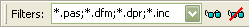

Filtering the Folder Compare View


|
Filtering the Folder Compare View |
|
|
There are two overall type of filters you can use to control a Folder Compare's scope: File filters that include or exclude files based on their name or attributes, and display filters that show or hide lines of the comparison based on comparison status. For instance, you can set the display filter to Show Left Newer to display only those files that are newer on the left side of the comparison. Or you can set a file filter to exclude *.bak files if you don't want to see or manipulate them. By default, commands that act on a selected folder's contents (such as Copy, Move, Delete, etc.) will respect the current filters. That is, if the selection includes a folder, the folder's filtered-out contents are skipped. (Note that this behavior has changed from BC version 2.) To change this default behavior, go to Tools > Options > Folder Views > Confirmations and enable Include hidden items by default. In either case, action dialogs allow you to override the default behavior on a case-by-case basis. On the View menu, choose Suppress Filters File Filters You can specify the type of files you want to include in (or exclude from) the session. For instance, if you are comparing Delphi projects you could include file types such as *.pas, *.dfm, and *.dpr. Or, you could include all files except *.dcu and *.~* by excluding these file types. To specify a simple "include these types" filter, use the Filters field on the toolbar. Enter the file types separated by semicolons, or use the dropdown to select from presets. Include a minus sign (-) in front of files to be excluded.  In addition to these simple wildcard filters, you can specify more complex filters that include or exclude files or folders by name. From the Session menu, select Session Settings Files can also be filtered based on their modified date, size, file attributes or text content. Select the Other Filters tab in the Session Settings dialog. (Folders are not directly filtered based on their attributes, but are affected by the filtering of their contents.) See also Folder Compare Other Filters. Display Filters Display filters limit the view to certain comparison results. The comparison results are determined by the session's comparison rules. For instance, you can pick Show Differences See also Display Filters. Folder Display Filters Special folder display filters control when folders appear, other than to hold visible files. Always Show Folders Compare Files and Folder Structure causes folders to respect the display filters. For example, if the main display filter is Show All then all folders appear. If it is Show Orphans, only orphan folders and folders that contain orphan files are shown. Only Compare Files suppresses all empty folders, both truly empty folders and folders whose entire contents are hidden by other display or file filters. Ignore Folder Structure |